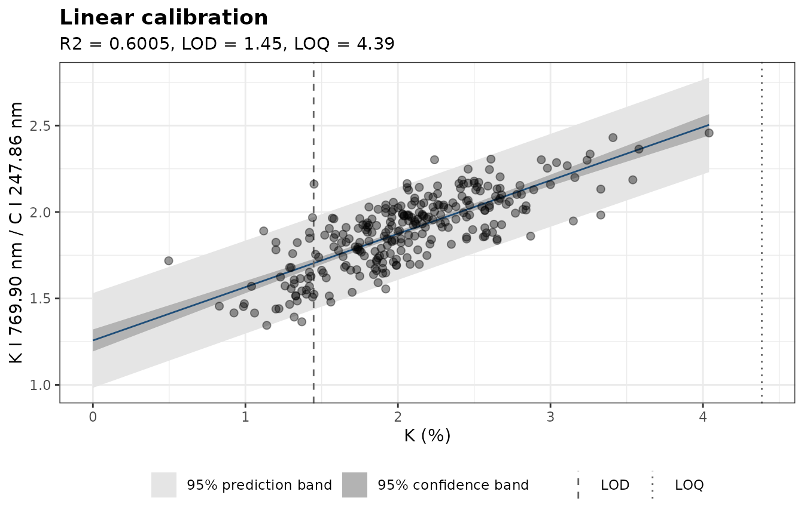
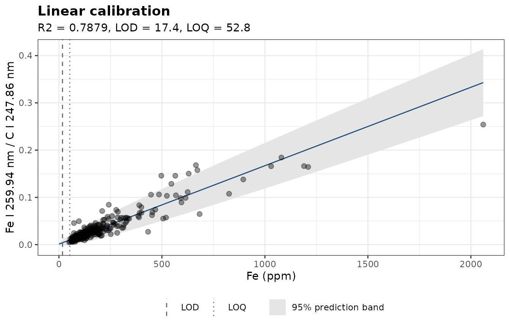
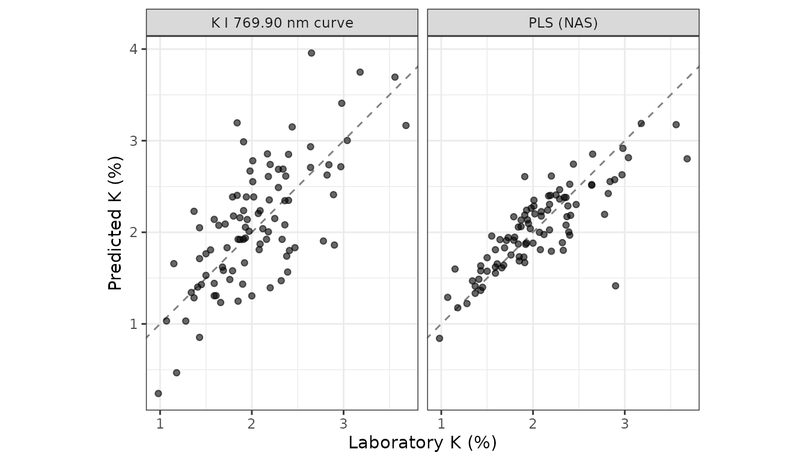
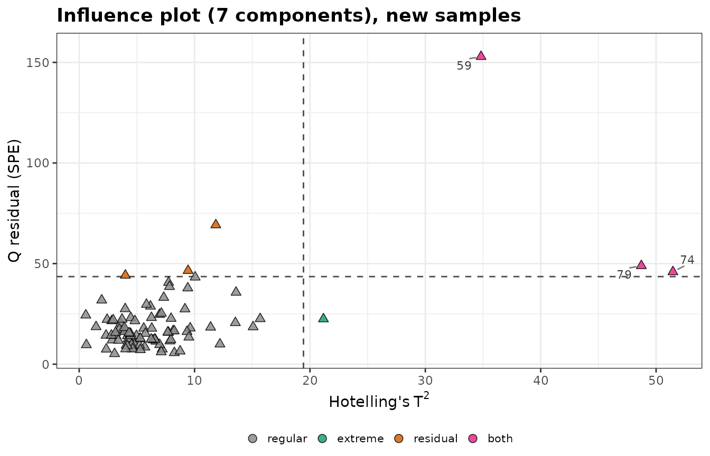
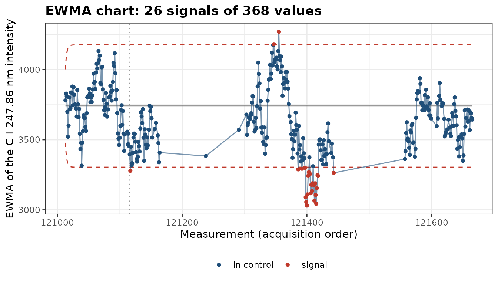

A calibration relates a signal to the concentration of an element, from samples of known composition, and predicts the concentration of new samples. This vignette builds univariate calibration curves from line intensities, with their limits of detection and quantification, and compares them with a multivariate model of the whole spectrum, whose figures of merit come from the net analyte signal. It ends with routine analysis: whether new spectra lie within the calibration space, how to transfer the calibration to another instrument, and whether the instrument drifts.
library(specProc)
library(dplyr)
library(tidyr)
library(ggplot2)
data("forageLIBS")
spectra_id <- forageLIBS |> select(1:2) |> names()
minerals <- forageLIBS |> select(3:14) |> names()
spectra <- forageLIBS |> select(-all_of(c(spectra_id, minerals)))Line intensities
We remove the baseline and measure, in every spectrum, the
intensities of a potassium line, an iron line and the carbon line C I
247.86 nm. Carbon is the main element of the forage matrix, and dividing
by its line compensates for the changes of ablated mass and plasma from
spectrum to spectrum (the internal standard of
vignette("preprocessing")):
corrected <- baseline_arpls(spectra, lambda = 1e5, max_iter = 20)$correction
lines <- c(C = 247.856, K = 769.896, Fe = 259.940)
intensities <- line_intensities(corrected, lines) |>
select(spectrum, line, intensity) |>
pivot_wider(names_from = line, values_from = intensity)
data <- forageLIBS |>
select(all_of(spectra_id), K, Fe) |>
mutate(K_signal = intensities$K / intensities$C,
Fe_signal = intensities$Fe / intensities$C)We set aside a quarter of the samples to test the calibrations:
A calibration curve for potassium
calibration_curve() fits the signal as a function of the
concentration, and returns the coefficients, the figures of merit and
tests of linearity:
k_curve <- calibration_curve(calibration, K_signal, K)
k_curve
#> Linear calibration curve (275 standards)
#>
#> term estimate std_error lower upper
#> intercept 1.2570 0.03232 1.1934 1.3206
#> slope 0.3087 0.01524 0.2787 0.3387
#>
#> R-squared: 0.60055
#> Sensitivity: 0.3087
#> LOD: 1.45 (residual)
#> LOQ: 4.39
#> Mandel: F = 4.52, p = 0.0345
#> Lack of fit: F = 1.12, p = 0.258- The sensitivity is the slope: the change of the signal for 1% of K.
- The limits of detection and quantification, 3.3\,\sigma/S and 10\,\sigma/S, use here the residual standard deviation \sigma of the fit. It includes every source of scatter around the curve, not only the noise of a blank, so the limits, 1.4% and 4.4% K, describe this calibration rather than the instrument.
- Mandel’s test compares the straight line with a quadratic curve. Its p-value, 0.034, points to a slight curvature, as expected for a resonance line, which the plasma partly reabsorbs at high concentration.
plot_calibration() draws the curve with its confidence
band (where the mean signal lies) and its prediction band (where a
single new measurement is expected):
plot_calibration(k_curve)
predict() inverts the curve: it gives the concentration
of new samples from their signals, with a prediction interval, and flags
the values below the limits of detection and quantification:
k_predicted <- predict(k_curve, test$K_signal)
head(k_predicted)
#> # A tibble: 6 × 8
#> signal concentration se lower upper below_lod below_loq outside_range
#> <dbl> <dbl> <dbl> <dbl> <dbl> <lgl> <lgl> <lgl>
#> 1 2.23 3.17 0.443 2.29 4.04 FALSE TRUE FALSE
#> 2 1.89 2.05 0.439 1.18 2.91 FALSE TRUE FALSE
#> 3 2.06 2.61 0.440 1.74 3.48 FALSE TRUE FALSE
#> 4 2.16 2.93 0.442 2.06 3.80 FALSE TRUE FALSE
#> 5 1.83 1.86 0.439 0.996 2.73 FALSE TRUE FALSE
#> 6 1.85 1.92 0.439 1.06 2.79 FALSE TRUE FALSE
sqrt(mean((k_predicted$concentration - test$K)^2)) # RMSEP, % K
#> [1] 0.4828623The limit of quantification of this curve, 4.4% K, is above the
potassium content of almost every sample, so 100% of the predictions are
flagged below_loq: a single line ranks the samples, but
does not quantify them individually with the usual 10\,\sigma margin.
The limits above follow the ICH convention. ISO 11843-2 and IUPAC define them by the risks of a false positive (\alpha) and of a false negative (\beta), and include the uncertainty of the curve itself: the critical value is the content above which potassium is declared present, and the limit of detection, the content detected with probability 1 - \beta:
k_iso <- calibration_curve(calibration, K_signal, K, lod_convention = "iso11843")
k_iso$figures_of_merit |> select(critical_value, lod, loq)
#> # A tibble: 1 × 3
#> critical_value lod loq
#> <dbl> <dbl> <dbl>
#> 1 0.744 1.49 4.51With risks of 5%, the limit of detection, 1.5% K, is close to that of
the ICH convention: with 275 standards, the uncertainty of the curve is
small next to the scatter of the samples. predict() then
marks the samples above the critical value as detected.
Uncertain reference values
Least squares treat the laboratory values as exact. Their errors bias
the slope toward zero (regression dilution) and narrow the intervals.
York’s regression weights each standard by the uncertainties of both its
concentration and its signal. The uncertainty of the laboratory values
is not given with these data, so we take, for illustration, a relative
standard uncertainty of 5%; that of the signal follows from the noise of
the spectra (intensity_se of
line_intensities()):
noise <- line_intensities(corrected, lines[c("C", "K")]) |>
mutate(relative_se = intensity_se / intensity) |>
select(spectrum, line, relative_se) |>
pivot_wider(names_from = line, values_from = relative_se)
data <- data |>
mutate(K_se = 0.05 * K, K_signal_se = K_signal * sqrt(noise$K^2 + noise$C^2))
calibration <- filter(data, !Sample %in% test_samples)
test <- filter(data, Sample %in% test_samples)
k_york <- calibration_curve(calibration, K_signal, K, regression = "york",
concentration_se = K_se, signal_se = K_signal_se)
k_york
#> Linear calibration curve (275 standards, York regression)
#>
#> term estimate std_error lower upper
#> intercept 0.8789 0.05284 0.7749 0.9830
#> slope 0.5314 0.02996 0.4724 0.5904
#>
#> R-squared: 0.60055
#> Chi-squared: 18.4 (reduced)
#> Sensitivity: 0.5314
#> LOD: 1.23 (residual)
#> LOQ: 3.71
#> Mandel: F = 4.52, p = 0.0345
#> Lack of fit: F = 1.12, p = 0.258The slope rises from 0.309 to 0.531, and the prediction error on the
test samples falls from 0.48 to 0.39% K. But the reduced chi-squared,
18, shows that the standards scatter far more than these uncertainties
explain: matrix effects, not the noise of the spectra or the assumed
errors of the laboratory values, dominate. York’s weights then mostly
lower the weight of the richest standards, whose 5% uncertainty is the
largest, much like weights "1/x2", rather than correct the
dilution of the slope; its standard errors are scaled up accordingly.
York’s regression is at its best with reference materials whose
certified uncertainties, and the replicate measurements of their
signals, describe the scatter (a reduced chi-squared near 1). When every
standard has the same uncertainties, regression = "deming",
with the ratio of their variances, is the simpler alternative.
Trace elements: weights and limits of detection
Iron ranges from 50 to 2060 ppm, and its signal is noisier at high
concentration. An unweighted fit is then dominated by the few rich
samples, and so is its residual standard deviation, which inflates the
limit of detection. Weights "1/x" give each sample a weight
inversely proportional to its concentration. With weights, the residual
standard deviation depends on their scale, so the blank standard
deviation is taken from the standard error of the intercept
(lod_method = "intercept"):
fe_calibration <- filter(calibration, !is.na(Fe))
fe_unweighted <- calibration_curve(fe_calibration, Fe_signal, Fe)
fe_weighted <- calibration_curve(fe_calibration, Fe_signal, Fe, weights = "1/x",
lod_method = "intercept")
bind_rows(unweighted = fe_unweighted$figures_of_merit,
weighted = fe_weighted$figures_of_merit, .id = "fit") |>
select(fit, n, r_squared, lod, loq)
#> # A tibble: 2 × 5
#> fit n r_squared lod loq
#> <chr> <int> <dbl> <dbl> <dbl>
#> 1 unweighted 272 0.852 295. 895.
#> 2 weighted 272 0.788 17.4 52.8
plot_calibration(fe_weighted, interval = "prediction")
The weighted fit gives a limit of detection of 17 ppm, instead of 295 ppm. Its R² is lower, because it no longer favors the rich samples, which dominate R².
A multivariate model and its figures of merit
A single line uses a small part of the spectrum. Partial least squares (PLS) regression uses all of it: we divide the baseline-corrected spectra by the carbon line, and choose the number of components by cross-validation on the calibration samples, with the pls package:
x <- as.matrix(corrected) / intensities$C
is_calibration <- !data$Sample %in% test_samples
x_calibration <- x[is_calibration, ]
cv <- pls::plsr(K ~ x, data = data.frame(K = data$K[is_calibration], x = I(x_calibration)),
ncomp = 15, validation = "CV", segments = 10)
ncomp <- pls::selectNcomp(cv, method = "onesigma")
ncomp
#> [1] 7nas() fits the same model and computes its net analyte
signal (NAS): the part of each spectrum that is unique to potassium,
orthogonal to the contributions of the other constituents. The figures
of merit follow from it:
- Sensitivity: the NAS produced by 1% of K.
- Selectivity: the fraction of each spectrum used for prediction.
-
Limits of detection and quantification, 3.3\,\sigma_x/\mathrm{SEN} and 10\,\sigma_x/\mathrm{SEN}, where \sigma_x is the noise of the spectra
(
noise).
We estimate the noise from the three samples measured twice, as the standard deviation of their difference spectra divided by \sqrt{2}:
repeated <- data$Sample[duplicated(data$Sample)]
differences <- sapply(repeated, \(s) {
rows <- which(data$Sample == s)
x[rows[1], ] - x[rows[2], ]
})
noise <- sd(differences) / sqrt(2)
k_nas <- nas(x_calibration, data$K[is_calibration], ncomp = ncomp, noise = noise)
k_nas$figures_of_merit
#> sensitivity selectivity analytical_sensitivity
#> 4.0183608 0.1183193 29.9163896
#> lod loq
#> 0.1103074 0.3342649
nas_predicted <- predict(k_nas, x[!is_calibration, ])
sqrt(mean((nas_predicted$predicted - test$K)^2)) # RMSEP, % K
#> [1] 0.2964224
summary(nas_predicted$selectivity)
#> Min. 1st Qu. Median Mean 3rd Qu. Max.
#> 0.0009985 0.0479909 0.0875087 0.1082689 0.1542453 0.3520663
bind_rows(
`K I 769.90 nm curve` = tibble(laboratory = test$K, predicted = k_predicted$concentration),
`PLS (NAS)` = tibble(laboratory = test$K, predicted = nas_predicted$predicted),
.id = "model"
) |>
ggplot(aes(laboratory, predicted)) +
geom_abline(colour = "grey50", linetype = "dashed") +
geom_point(alpha = 0.6) +
facet_wrap(~ model) +
coord_equal() +
labs(x = "Laboratory K (%)", y = "Predicted K (%)") +
theme_bw()
The PLS model predicts the test samples with an error of 0.30% K, against 0.48% for the calibration curve. Its limit of detection, 0.11% K, accounts for the noise of the spectra only, so it is a lower bound, far below the limit of the calibration curve, which includes all the scatter of the samples. Its mean selectivity, 0.12, means that only about a tenth of each spectrum is specific to potassium: the rest is shared with the other constituents and the plasma.
Spectra outside the calibration space
A model is reliable only for spectra like those it was calibrated on.
applicability_domain() describes the calibration spectra by
a principal component analysis, here with as many components as the PLS
model, and predict() flags the test spectra whose Hotelling
T^2 (more extreme than the calibration
samples) or Q residual (unlike them) exceeds its 99% limit:
domain <- applicability_domain(x_calibration, k = ncomp)
domain
#> Applicability domain: PCA of 275 calibration spectra
#>
#> Components: 7 (91.78% of the variance)
#> Limits: T2 = 19.44, Q = 43.54 (99%)
outside <- predict(domain, x[!is_calibration, ])
count(outside, outlier)
#> # A tibble: 4 × 2
#> outlier n
#> <fct> <int>
#> 1 regular 86
#> 2 extreme 1
#> 3 residual 3
#> 4 both 3
plot_influence(outside)
7 of the 93 test spectra lie outside the domain. Their predictions
are about as accurate as the others (mean absolute error 0.22 against
0.22% K): the flag says that the model extrapolates, not that the
prediction is wrong, but such samples deserve a check in routine
analysis. For a calibration curve, predict() flags the
concentrations outside the range of the standards
(outside_range).
Transferring the calibration to another instrument
A calibration is tied to the instrument that recorded its spectra, the primary instrument. On a secondary instrument, or on the same one after a change of its optics, the spectra differ, and so do the predictions. With no second instrument for these samples, we simulate one: its response tilts by ±15% across the spectral range, its wavelength axis is shifted by one channel, and it adds an offset:
wl_x <- as.numeric(colnames(x))
response <- 1 + 0.3 * (wl_x - mean(wl_x)) / diff(range(wl_x))
secondary <- sweep(cbind(x[, -1], x[, ncol(x)]), 2, response, "*") + 0.002The PLS model of potassium predicts the test samples measured on this
instrument badly. Twenty calibration samples, measured on both
instruments, are enough to transfer their spectra: by direct
standardization (ds()), a linear map of the whole spectrum,
or by spectral space transformation (sst()), which moves
the secondary spectra by the difference between the instruments in the
principal components they share. Instead of the spectra,
slope_bias() corrects the predictions by a straight
line:
predict_k <- \(spectra) drop(predict(cv, newdata = data.frame(x = I(spectra)), ncomp = ncomp))
set.seed(2)
transfer_samples <- sample(which(is_calibration), 20)
secondary_test <- secondary[!is_calibration, ]
by_ds <- ds(x[transfer_samples, ], secondary[transfer_samples, ])
by_sst <- sst(x[transfer_samples, ], secondary[transfer_samples, ])
by_slope_bias <- slope_bias(predict_k(secondary[transfer_samples, ]), data$K[transfer_samples])
prediction_error <- \(predicted) sqrt(mean((predicted - test$K)^2))
transfer_errors <- c(
primary = prediction_error(predict_k(x[!is_calibration, ])),
secondary = prediction_error(predict_k(secondary_test)),
ds = prediction_error(predict_k(predict(by_ds, secondary_test))),
sst = prediction_error(predict_k(predict(by_sst, secondary_test))),
slope_bias = prediction_error(predict(by_slope_bias, predict_k(secondary_test)))
)
round(transfer_errors, 2) # RMSEP, % K
#> primary secondary ds sst slope_bias
#> 0.30 1.69 0.29 0.29 0.47Direct standardization and SST bring the error of the test samples
back to that of the primary instrument, 0.30% K, from 1.69% K. The slope
and bias correction removes most of the bias, but not the distortion of
the spectra, which changes the ranking of the samples.
pds(), piecewise direct standardization, suits local
differences such as shifts of the axis, but its transfer matrix has one
row and one column per channel (7152 here), heavy for whole spectra.
Monitoring drift
The measurements are numbered in the order in which they were acquired. The carbon line, the internal standard of these calibrations, follows the ablated mass and the plasma, so a control chart of its intensity shows the stability of the instrument over the acquisition. The first 100 measurements set the center and the standard deviation, and an exponentially weighted moving average (EWMA), sensitive to slow drifts, follows the others:
carbon <- control_chart(intensities$C, order = data$Measurement, method = "ewma",
baseline = 100)
plot_control_chart(carbon, xlab = "Measurement (acquisition order)",
ylab = "EWMA of the C I 247.86 nm intensity")
The intensity changes by blocks between the sessions of the
acquisition (the gaps in the numbering), and the chart signals 26
measurements; the longest run of signals, from measurement 121411 to
121418, is a drop of the intensity. Dividing by the carbon line
compensates for such changes in the calibrations above. In routine
analysis, a check sample measured at regular intervals, charted the same
way (method = "shewhart", "ewma" or
"cusum"), separates a drift of the instrument from a change
of the samples.
Summary
- Normalize line intensities to an internal standard, such as the carbon line of an organic matrix.
-
Check the linearity with Mandel’s test and the
lack-of-fit test of
calibration_curve(); resonance lines often curve at high concentration. - Weight the fit when the signal is noisier at high concentration, and take the limit of detection from the intercept or from blanks.
-
Report how the limits were estimated: from the
residuals of a curve, they include the scatter of the samples; from the
noise of the spectra (
nas()), they are lower bounds. - State the convention of the limits: ICH (3.3\,\sigma/S) or ISO 11843 (risks \alpha and \beta, uncertainty of the curve).
- Account for uncertain reference values with York’s or Deming’s regression.
- Flag the samples outside the applicability domain, and chart an internal standard or a check sample to detect drifts.
-
Transfer the calibration to another instrument with
ds(),sst()orpds(), or correct its predictions withslope_bias(). - Validate on samples left out of the calibration: the prediction error on test samples is the most honest figure of merit.
The last vignette, vignette("plasma-diagnostics"),
measures the plasma itself: electron density, temperature and
self-absorption.